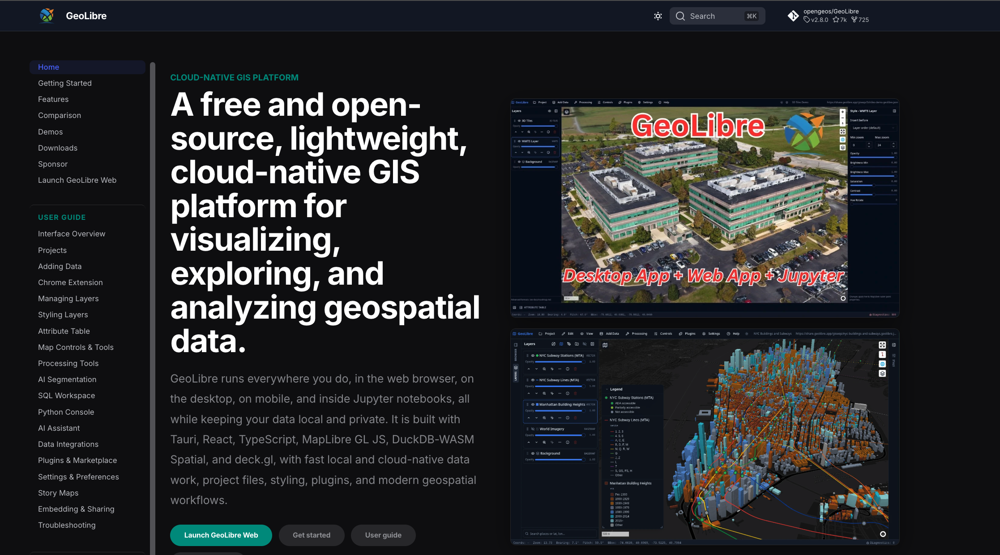
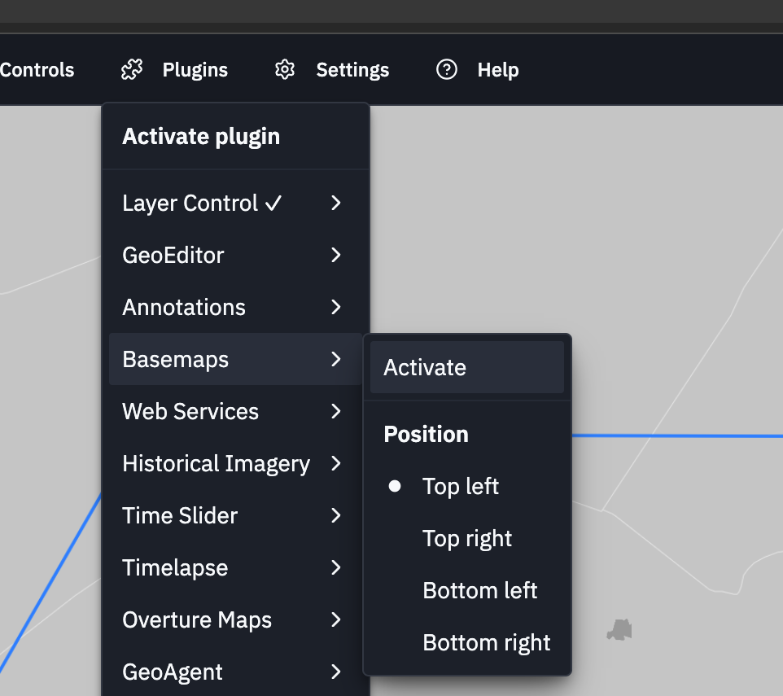
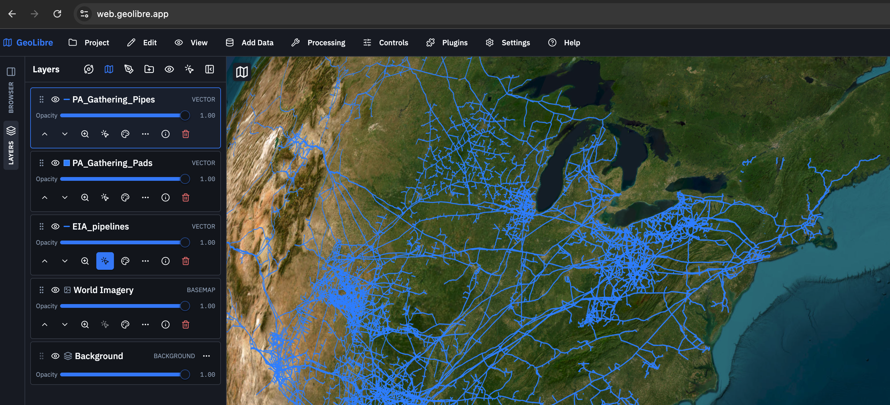
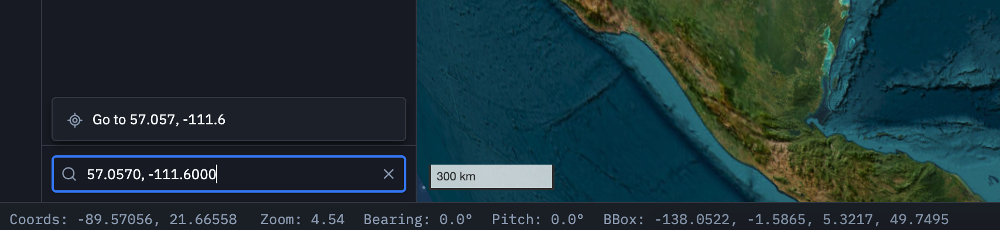

Sustainable Systems Fall 2026: Class 2 Assignment
🌐 Part I: In-Class Assignment 2 | Getting Started with Mapping - GeoLibre
Assignment Overview
In this guided in-class exercise, we will use GeoLibre to explore how spatial data and satellite imagery can make otherwise difficult-to-see energy systems visible. We will begin by locating Spiral Jetty through geographic coordinates, using it to become familiar with navigating and changing scale in a web-based mapping environment. We will then download and load spatial data representing fossil-fuel infrastructure and use satellite imagery to investigate several intensive extraction landscapes around the world. By moving between coordinates, spatial data, and imagery, we will examine the upstream networks of fossil fuels—from extraction sites to pipelines—and consider how different forms of representation allow us to see systems that are often largely invisible in everyday life.

🧭 GeoLibre + Geographic Coordinates
Geographic coordinates allow us to locate a precise position on the Earth’s surface. A coordinate pair is expressed as latitude and longitude:
- Latitude measures position north or south of the Equator.
- Longitude measures position east or west of the Prime Meridian.
- In decimal degrees, locations south of the Equator and west of the Prime Meridian are expressed as negative numbers.
We will use Spiral Jetty as our first location to become familiar with geographic coordinates and navigating within GeoLibre.
01 | Open GeoLibre
Open the GeoLibre web application in your browser.
02 | Locate Spiral Jetty
Use the following coordinate pair to navigate to Robert Smithson’s Spiral Jetty on the northeastern shore of Great Salt Lake, Utah:
41.4375, -112.6689
Remember that coordinates are entered in this order:
Latitude, Longitude
03 | Change Your Scale
Change the basemap to ESRI World Imagery via the Basemaps Plugin and return to Spiral Jetty.

💭 Consider While You Work
- At what scale does Spiral Jetty first become visible?
- What relationships become visible when you zoom out?
- What details become visible when you zoom in?
- What does satellite imagery reveal that a conventional map does not?
🔗 Energy Vectors | Seeing the Network
Energy moves between places. Extraction sites, gathering systems, processing facilities, transmission pipelines, and points of consumption form networks that can extend across enormous distances.
We will now use vector spatial data to make part of this network visible. Rather than looking at individual places through satellite imagery, we will first zoom out and examine fossil-fuel infrastructure as a connected geographic system.
01 | Download the Spatial Data
Download the spatial-data .zip files from the direct download links:
For this exercise we will work with:
- U.S. Energy Information Administration (EIA) — Natural Gas Pipelines
- Pennsylvania — Natural Gas Pipelines
- Pennsylvania — Oil + Gas Well Pads
Keep each dataset as a .zip file. GeoLibre can load the spatial data directly from the compressed file.
02 | Load a Vector Layer
In GeoLibre:
- Select Add Data.
- Select the downloaded
.zipfile. - Add the dataset to your map.
- Confirm that the new layer appears in the Layers panel.
Begin with the EIA Natural Gas Pipelines dataset.
Zoom out until you can see the larger geographic extent of the pipeline network.
03 | Turn Layers On + Off
Use the Layers panel to turn the pipeline layer on and off.

Pay attention to how dramatically the representation of the territory changes when the infrastructure is visible.
Then add the Pennsylvania pipeline and well-pad datasets.
Turn the layers on and off individually and in combination.
04 | Change the Symbology
Select one of the vector layers and open its Style controls.
Experiment with changing its appearance:
- line color
- line width
- point size
- point color
Your goal is not simply to make the map attractive. Change the symbology so that the different parts of the energy system can be read clearly in relation to one another.
05 | Move Through the Network
Begin at the scale of the larger U.S. pipeline system and progressively zoom toward Pennsylvania.
Look for the transition between:
EXTRACTION → GATHERING → TRANSMISSION
Notice how the appearance of the network changes as you change scale.
💭 Consider While You Work
- At what scale does the energy network become visible?
- What does the vector data allow you to see that would be difficult to recognize from satellite imagery alone?
- What happens to your understanding of the landscape when you turn the infrastructure layers off?
- How do well pads, gathering infrastructure, and larger transmission pipelines relate spatially?
🛰️ Global Extraction Landscapes
We have used vector data to visualize fossil-fuel infrastructure as a network. We will now shift from vector data to satellite imagery and examine several places where fossil fuels are physically extracted from the Earth.
Each coordinate below places you within a major extraction landscape. Rather than looking for a single object, explore the surrounding territory and look for the spatial patterns and physical evidence produced by extraction.
01 | Switch to Satellite Imagery
Change the GeoLibre basemap to ESRI World Imagery.
Turn off the vector layers from the previous exercise so that you can concentrate on the physical landscape visible in the satellite imagery.
02 | Explore the Extraction Sites
Copy and paste each Latitude, Longitude coordinate pair into GeoLibre, one at a time. Explore each site separately.

| Extraction Site | Coordinate Pair |
|---|---|
| Athabasca Tar Sands, Alberta, Canada | 57.0570, -111.6000 |
| Permian Basin, Texas, USA | 31.9700, -102.1500 |
| Niger Delta Flare Example, Nigeria | 5.65941, 6.51503 |
| Burgan Field, Kuwait | 28.9583, 48.0667 |
| Haerwusu Coal Mine, China | 39.7380, 111.2380 |
03 | Change Your Scale
At each location, begin close to the coordinate and then progressively zoom out.
Do not simply identify the extraction site. Look at how the infrastructure occupies and reorganizes the surrounding territory.
Pay attention to:
- excavation and removal of land
- wells and drilling pads
- roads and access networks
- pipelines and linear infrastructure
- processing and storage facilities
- flaring and combustion
- repetition and concentration
- relationships to settlements, agriculture, water, and other landscapes
💭 Consider While You Work
- What evidence of extraction can you identify?
- At what scale does extraction become most visible?
- What spatial patterns does extraction produce?
- How does the landscape change as you move outward from the extraction site?
- What becomes visible as you zoom out? What disappears?
- How does seeing the physical extraction landscape change your understanding of the vector networks we examined earlier?
🏙️ Part I Assignment II | NYC Gas Infrastructure Forensics
Assignment Overview
Much of New York City’s energy infrastructure operates beneath the street and is largely invisible during everyday life. In this forensic investigation, you will use visible traces, street markings, open excavations, and other physical evidence to identify gas infrastructure hidden below the street.
Your task is to observe, document, and interpret this evidence while distinguishing the gas system from the other infrastructure systems occupying the same space.
01 | Review the Field Guides
Before beginning your investigation, review the following two field guides:
Gas Flows Below — Nicholas Pevzner, Urban Omnibus
https://urbanomnibus.net/2018/09/gas-flows-below/
Why Are There Street Markings All Over New York City? — The New York Times
https://www.nytimes.com/video/arts/100000011086535/why-are-there-street-markings-all-over-new-york-city.html
Use these sources to familiarize yourself with the visual language of NYC utility markings and the different infrastructure systems they identify.
02 | Find a Site
Walk through your neighborhood and locate one site where you can identify evidence of underground gas infrastructure.
Look for either:
- an open street cut or excavation where underground infrastructure is physically exposed, or
- street markings that indicate the location of gas infrastructure beneath the pavement.
NYC streets contain overlapping systems for gas, electricity, telecommunications, water, sewer, steam, and other infrastructure. Your goal is not simply to find utility markings. You must find and identify evidence belonging specifically to the gas system.
Safety: Do not enter a construction area, excavation, work zone, or restricted area. Make all observations and photographs from a public sidewalk or other safe public location. Make sure NOT to put yourself at risk; always be aware of your surroundings at/near the street.
03 | Identify the Gas Infrastructure
Study the markings and other physical evidence at your site carefully.
Yellow/Orange markings generally identify gas infrastructure, but color alone is not sufficient evidence. Look closely for:
- letters + abbreviations
- lines + arrows
- dimensions
- pipe sizes
- pipe materials
- valves + connections
- other written or physical clues
Use the assigned field guides to investigate what these markings mean.
Also look for evidence of other infrastructure systems at the same location. Separate the evidence belonging to the gas system from the other utilities occupying the street.
04 | Photo Document the Site
Take 2–4 photographs that document your investigation.
Include:
- at least one context photograph showing the larger street and surrounding conditions.
- at least one close-up photograph clearly showing the gas markings or exposed gas infrastructure.
- additional photographs as necessary to document other markings, infrastructure, or evidence important to your interpretation.
Your photographs should allow someone who has not visited the site to understand what you observed and where you observed it.
05 | Record the Location
Record:
- Borough
- Closest street intersection
- Latitude + Longitude
Record the geographic coordinates as a single copyable pair:
Latitude, Longitude
For example:
40.7359, -73.9946
Be as precise as possible. The coordinate should identify the location of the infrastructure evidence you photographed, rather than simply the surrounding neighborhood.
06 | Interpret the Evidence
Write a brief 100–150 word forensic analysis of your site.
Address the following:
- What evidence tells you that you have located gas infrastructure?
- What do the markings or exposed infrastructure tell you about the system below the street?
- What other infrastructure systems can you identify at the same location?
- How did you distinguish the gas infrastructure from these other systems?
Use specific evidence from your photographs and the assigned field guides to support your interpretation.
📤 What to Submit
Submit one PDF containing:
- 2–4 site photographs
- Borough
- Closest street intersection
- Latitude + Longitude
- 100–150 word forensic analysis
Clearly identify which photograph or markings you believe represent gas infrastructure.
🔎 Final Check
Before submitting, confirm that:
Complete the submission using the checklist above. The submission location is at Canvas, noted as Assignment 2
📚 Part III: Class 1 Readings
The following readings provide the conceptual and research framework for our work with energy systems.
01 | Introduction: Manufacturing Ignorance
Climate Crisis, Energy Violence
Introduction: Manufacturing Ignorance
Read the complete Introduction.
As you read, pay particular attention to:
- energy as both a material and social system
- flow + connectivity
- extraction + infrastructure
- the relationship between visibility + invisibility
- how energy infrastructure transforms landscape + place
02 | Chapter 1: Research Methods
Climate Crisis, Energy Violence
Chapter 1: Research Methods
Read pp. 2–14, ending before Environmental Injustice.
Focus on:
- Space + Power
- Energy is Spatial
- Spatializing Infrastructure
- Time Matters
Complete both readings before the deadline.
There is nothing to submit for this portion of the assignment. Be prepared for a reading quiz at the beginning of class on Thursday | 09-11-26.
Use the guiding questions below to focus your reading and prepare for the quiz.
💭 Consider While You Read
Be prepared to define or explain:
Energy transition vs. energy transformation
Energy violence — including fast violence + slow violence
Flow + connectivity
Why energy is spatial
Spatializing infrastructure — including nodes, corridors + proximity
Energy vectors — including upstream, midstream + downstream
Why time matters when analyzing energy infrastructure